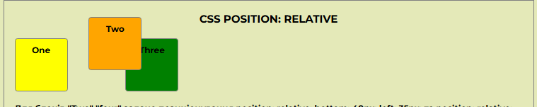
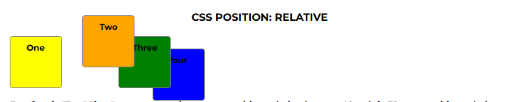
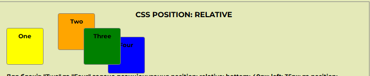
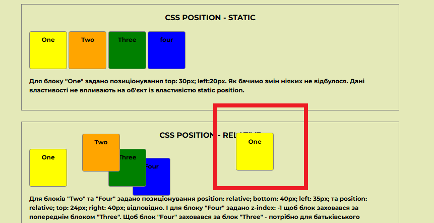

CSS position - static
Для блоку "One" задано позиціонування top: 30px; left:20px. Як бачимо змін ніяких не відбулося. Дані властивості не впливають на об'єкт із властивістю static position.
CSS position - relative
Для блоків "Two" та "Four" задано позиціонування position: relative; bottom: 40px; left: 35px; та position: relative; top: 24px; right: 40px; відповідно. І для блоку "Four" задано z-index: -1 щоб блок заховався за попереднім блоком "Three". Щоб блок "Four" заховався за блок "Three" - потрібно для батьківського елементу "relative-block" задати position: relative; та z-index: 0; в іншому випадку блок "Four" стане невидимий - його перекриє фон.
На прикладі блок "Four" зних - його перекриває фон батьківського блоку.
А якщо ми приберемо фон взагалі - то тоді не потрібно задавати відносне позиціонування та нульвий z-index для батьківського блоку. Достаньо задати для блоку "Four" z-index: -1;(скрін 2).
А для того щоб блок "Three" був вищий за блоки "Two" та "Four" необхідно блоку "Three" задати більший z-index (в даному випадку z-index:3;) за z-index у відповідний блоків "Two" та "Four ( z-index:1; z-index:2; відповідно)".
CSS position - fixed
Блоку "Two" задано position: fixed; bottom:0px;
right:0px;. Блок зафіксувався в правому нижньому куті вікна огляду і прокручується із сторінкою.
А якщо блоку "Three" задати фіксоване позиціонування top:50%; left:50%; - він зафіксується посередині екрану і заважатиме огляду контенту.
CSS position - absolute
Блок "One" позиціонований абсолютно position: absolute; top: 80px; left: 480px; відносно свого батьківського блоку
На малюнку нище - блоку "One" задано position: absolute; top: 500px; left: 800px; і даний блок буде позиціонований відносно body так як батькіському блоку "absolute-block" не задано position:relative;.
CSS position - sticy
Джей — відомий письменник, що втратив натхнення і життєві орієнтири. Він живе дитячими спогадами, у яких завжди літо і старий Джо з його чарівним вином та фантастичними історіями. Коли ж Джей нарешті зважується відвідати «місце сили» свого дитинства, то замість хати Джо знаходить лише руїну — і кілька пляшок його особливого вина, здатного магічним чином змінювати життя.
Тоді чоловік раптово вирішує покинути все і купує старий будинок у французькому містечку Ланскне-су-Танн. Здається, тепер він нарешті здобуде втрачене натхнення, визнання та захмарні гонорари. Однак несподівано для себе Джей опиниться перед вибором: якого життя він хоче насправді? Того, в якому немає місця казці та мріям, але є гонорари й слава? Чи іншого, сповненого буденних радощів, простих речей і любові — солодкої, як особливе вино старого Джо?..
Багато років тому Джей написав твір, що потім йому визнання. Але після того… щось втратилось. Муза, натхнення - щось полишило Джея, і гроші він тепер заробляє хоч і письменством, але творів, які високою літературою не вважає. В стосунках не все добре також, і коли одного дня Джей бачить рекламний проспект з будинком на продаж, який нагадує йому роки юності, він купує його, слухаючи поклик серця. Так із Англії він потрапляє до маленького містечка у Франції. У Ланксне всі знають все про всіх - і якщо якась думка у жителів містечка про інших складається, то вона затримується на роки.
Облаштовуючи куплений будинок та намагаючись налагодити стосунки з відверто вороже налаштованою сусідкою, про яку в містечку ходить не дуже добра слава, Джей раптово (хто б сумнівався?) відчуває натхнення писати - і не останню роль в цьому відіграють запилені пляшки дивного на смак вина, яке він колись отримав як останнє (чи ні?) «Прощавай» від старого друга. Магічний реалізм у Гарріс такий, що йому віриш, а створювати атмосферу вона безперечний майстер. Тягуча і солодкава, як старе вино, оповідь занурює в себе і зігріває - особливо осінніми вечорами. Не можу сказати, що мені імпонував головний герой, бо його поведінка на початку книжки - ну відверто така собі, але атмосферність та задоволення я отримала сповна. Сподобалось!